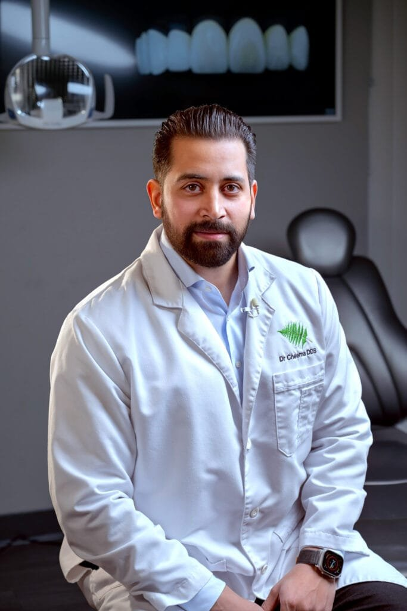

Fix the request page
Check links, page speed and how requests reach staff.
A local Sacramento marketing team.
We built this audit for Paramount Dental.
Reach nearby people on Facebook and Instagram.
Real videos, photos and clear messages.
Get found through your Google Business Profile, site and blogs.
You have a strong video library, a visible doctor and five named offices.
We checked how someone moves from those stories to a consultation at the right office.

The Privacy, Terms and Accessibility links return to the same page.
These links don’t let patients check how their information will be used.
Add the real policy pages. Link them near the consultation form too.
The implant page shows a combined review claim without a location or date breakdown.
Roseville patients may want to read Roseville stories.
Link reviews by office. Name the source and date they were checked.
Google’s October 20 phone simulation took 12.6 seconds to show the main content. No real-visitor data was available.
Some patients may leave before reaching the consultation step.
Compress images and load extra videos only when needed. Retest the page.
Check links, page speed and how requests reach staff.
Edit approved patient videos into short local ads.
Track requests and booked visits for that office.
Let’s review its consultation page and agree which patient stories to use.